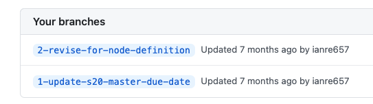
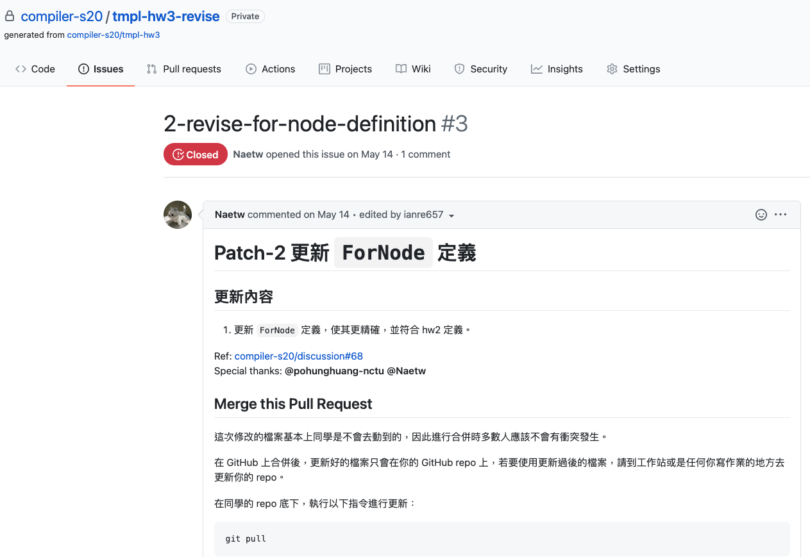
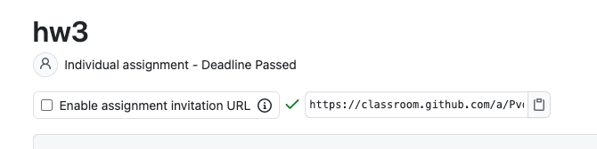
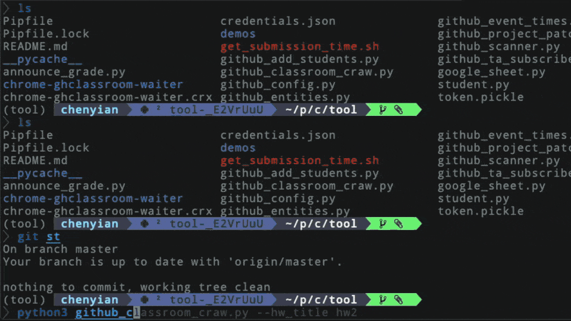

Hand
Hand 是一個用來管理 Github Organization 下作業的工具集。 在 Hand 的處理邏輯中，除了 Github 本身之外，也同時會使用到 Google Sheet, GithubClassroom。
Installation
1. Install this tool via pip
pip install invisible-hand
Use hand -h to test if it is installed
╰─❯ hand -h
Usage: hand [OPTIONS] COMMAND [ARGS]...
Manage your classroom under Github organization.
Options:
--custom-base TEXT Use custom base folder for configs
--install-completion Install completion for the current shell.
--show-completion Show completion for the current shell, to copy it or
customize the installation.
-h, --help Show this message and exit.
Commands:
add-students Invite students to join our Github organization
announce-grade Announce student grades to each hw repo
config Config File utilities
crawl-classroom Get student's submissions from Github Classroom
event-times Retrieve information about late submissions <repo-
hash>...
grant-read-access Make TAs being able to read all homework repos...
patch-project Patch to student homeworks
2. Install chromedriver
- Mac :
brew cask install chromedriver - Ubuntu :
apt install chromium-chromedriver
Getting Started
1. Create config file
The main config file is located in $HOME/.invisible-hand/config.toml.
Run hand config create to create a template and use hand config edit to open it with an editor.
2. (Not required) Getting your client_secret.json for accessing GoogleSheets
To run the command: Announce Grade , follow the steps below to setup your environment first
- Follow Authorization for pygsheets to get your credential file (
client_secret.json) -
Locate your secret file and use
hand config copy-client-secret YOUR-SECRET-FILEto copy it into the cache.This command would automatically rename your secret file to (
$HOME/.invisible-hand/client_secret.json)
Quick references
(This tool supports auto-completion, use hand --install-completion to add completion support to your shell)
hand: The root command, use-hto see more informationconfig: subcommand to handle config files, use-hto see more informationcreate: Create a config file from template to$HOME/.invisible-hand/config.tomlcheck: Check if the format your config file is validpath: Show the root path to your config folder, default to$HOME/.invisble-handedit: Open your config file with your default editor. (use--editor <your editor>to open your another one)copy-client-secret: Copy Google'sclient_secret.jsonto the cache folder.- use
hand config copy-client-secret -hto see more information
add-students üßë‚Äçüíºstudent1 ü¶∏‚Äç‚ôÇÔ∏èstudent2 ...: Invite users into your GitHub organizationüßë‚Äçüíºstudent- GitHub handle of the student
grant-read-access üìù hw-title: Grant TA's group read access to all repo with such prefix.üìù hw-title- title prefix of the homework (e.g.hw3)
patch-project üìù hw-title üöß patch-branch: Patch project to Students homeworkscrawl-classroom üìù hw-title üì¶ submission-file: Crawl submission status of students on GitHub Classroomüì¶ submission-file- file to store submission output
event-times üì¶ submission-file: Check if there's late submissionsannounce-grade üìù hw-title: Announce grade to students by opening issues in their repos
Add Students
FAQ
-
Some students report that they didn't get the invitation email.
Invite student into your organization from their email. This should be Github's issue.
about 2 of 80 students got this issue from our previous experience.
Patch Project
Patch to student homework repositories.
Workflow
Take homework : hw3(the title of your homework in github classroom) for example:
The repository: tmpl-hw3 would be your template for initializing homeworks.
1. Create another repo with name tmpl-hw3-revise to update your template
2. Inside tmpl-hw3-revise
- Create a revision branch
2-revise-for-node-definition(whatever you like)

- Create an issuse with the identiacal title
2-revise-for-node-definition) - the content of that issue would become the content of your PR message.

3. Open GitHub Classroom
Select your assignment (hw3) and disable assignment invitation URL of hw3

4. Create an PR to your template repo (hw3)
hand patch-project hw3 --only-repo="tmpl-hw3" 2-revise-for-node-definition
5. Accept the PR in your template repository (tmpl-hw3)
After that, enable the assignment invitation URL of hw3 in GitHub Classroom.
Now you have succcessfully updated your template repo.
6. Create PRs to students template repositories ( hw3-<their github id> )
Patch to every repository that uses hw3 as the prefix under your GitHub organization.
hand patch-project hw3 2-revise-for-node-definition
7. Merge the revision branch 2-revise-for-node-definition inside tmpl-hw3
After this step, all documents are updated
8. Reactivate the invitation URL

Crawl Classroom
Crawling homework submission data from Github Classroom
This is a web crawler for Github Classroom, which is the input of Event Times
Config File
- config.toml:
[crawl_classroom]:login: your login id in Github Classroom[crawl_classroom]:classroom_id: the id field of your classroom RESTful page URL. (see the image below)

FAQ
- ChromeDriver
selenium.common.exceptions.SessionNotCreatedException: Message: session not created:
This version of ChromeDriver only supports Chrome version 79
upgrade your chromedriver via `brew cask upgrade chromedriver`
- All students not submitted
- Remember to set deadline of hw on the GitHub classroom (note that deadline can only be set at a future time)
Demo

Event Times
Retrieve information about late submissions
What it actually does
Compare the last publish-time of specific git commit in each repository and print out which passed the deadline.
Example
hand event-times --target-team="2020-inservice-students" --deadline="2019-11-12 23:59:59" hw1-handin-0408.txt
Announce Grade
Publish feedbacks by creating Issue to student's homework repo.
This sciprt requires you to
+ Use a GoogleSpreadSheet to record every student's grade inside a strictly named tab.
+ Strictly structured Github repository.
Explanation
In our scheme, each student would get a git repository for every homework project.
Take homework hw3 with two students Anna and Bella for example.
We expect there would be 2 repos under our GitHub organization, which are hw3-Anna and hw3-Bella.
Annoucing the grade for hw3 actually means to open 1 issue to hw3-anna and hw3-bella respectively.
To make sure the script correctly functions:
+ students grade should be recorded in the SpreadSheet with a tab called hw3.
+ You should keep a Markdown file for each student using their student-id as the filename to describe their homework result.
+ e.g. (if Anna's sutdent-id is 0856039, then 0856039.md should record Anna's overall feedbacks).
+ Behold: student-id should be unique.
Format and Structure for those files
- 0856039.md (
Anna)
Hi, @Anna
## Information
+ Grade: ${grade}
+ testcase : ${grade_testcase}/100 pts
+ report : ${grade_report}/5 pts
+ Grader: @{grader}
+ Feedback:
Good Job
## Note
If you got any questions about your grade
please make a comment stating your arguments below and tag the grader in the comment.
This markdown file contains python template strings(${grade}),
These strings are the column names inside your SpreadSheet tab hw3.
- Structure of the GitHub Repo:
. Hw-manager # root of your git repo (the name is configured in `$HOME/.invisible-hand/config.toml`)
├── hw3
│   └── reports
│   ├── 0411276.md
│   ├── 0856039.md (**Anna**)
└── hw4 # other homework dir
- Structure of the Google SpreadSheet
| student_id | grade | grade_report | grade_testcase | grader |
|---|---|---|---|---|
| 0856039 | 93 | 5 | 87 | @TA1 |
| 0411276 | 80 | 5 | 75 | @TA2 |
Config file
- config.toml
[github]:personal_access_token[github]:organization[announce_grade]:feedback_source_repo(e.x.: Hw-manager)[google_spreadsheet]:spreadsheet_id- client_secret.json (follow here to download your oauth2 secret file and renamed it to client_secret.json)
Instructions to follow
- Edit config files properly.
- Create feedbacks for students in your
feedback_source_repo - Make sure you commit and push the feedbacks to
masterbranch - Fill out the SpreadSheet
- Use this script
-
For testing, it's recommended to use the
--only-idoptionsh hand announce-grade <hw_title> [--only-id ü뮂Äçüéìstudent-id]